Chido
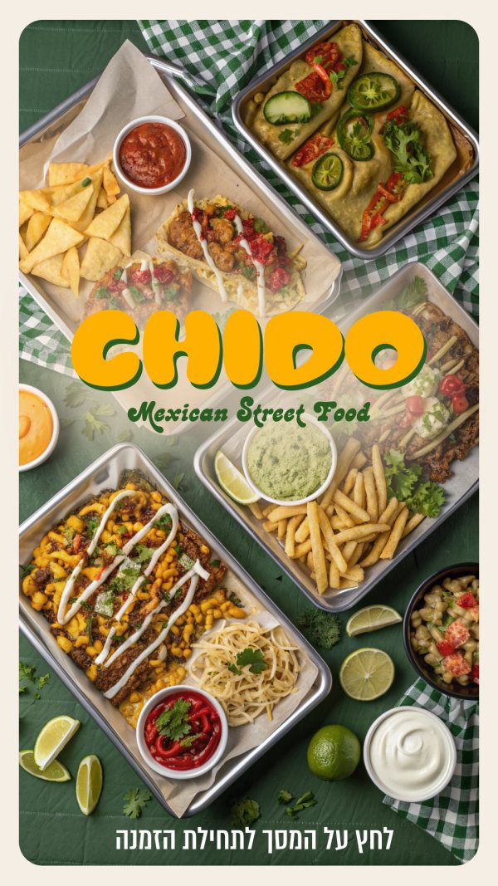
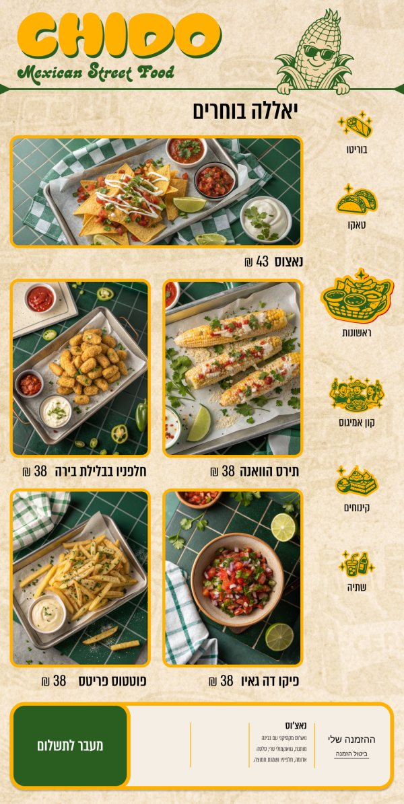
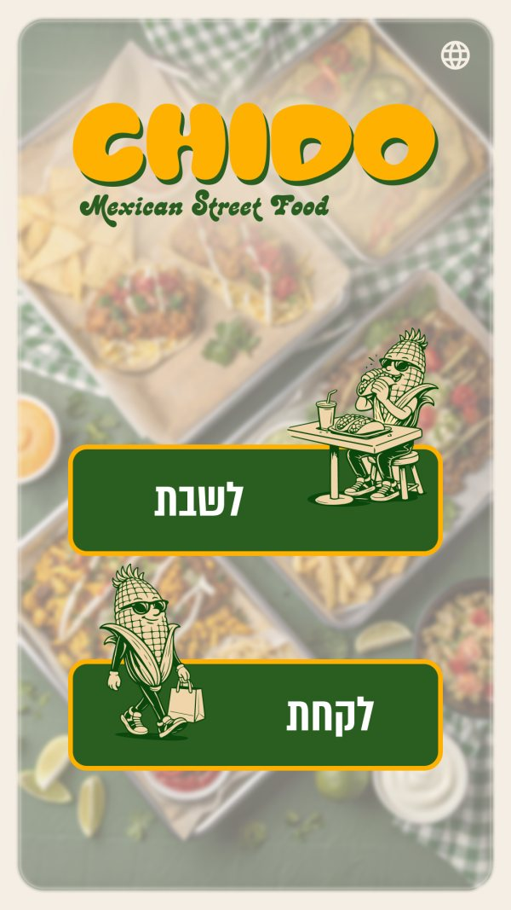
A self-order kiosk experience for a Mexican street food restaurant: photo-led, quick to tap through, and full of personality.
The brief
Chido is a Mexican street food restaurant, and the kiosk is the first thing a hungry guest touches. I designed the full ordering flow for a portrait touchscreen: from the welcome screen, through dine in or take away, to browsing the menu and customizing a dish, all in Hebrew and right to left, and all in Chido's loud, sunny brand.
Understood in seconds, with no one to explain it
The counter is slow
Ordering at a busy counter is slow, and a long menu with sauces and extras is easy to get wrong. A kiosk has to be understood in seconds by a first time guest, with no staff to explain it, while still feeling like the restaurant and not like a generic checkout machine.
A short, photo first flow
A full screen welcome, one big choice between dine in and take away, a menu built around appetizing food photography, and a dish page where sauces and extras are picked by tapping pictures instead of reading options.
Grayscale first, brand second
I started from grayscale wireframes to settle the structure and the tap order, then dressed them in the brand: warm paper textures, yellow outlined photo frames, and a corn mascot who shows up at the moments a guest needs a friendly nudge.
One main screen, six ways in
Before drawing a single screen, I mapped the whole kiosk as a sitemap. A guest enters through the welcome screen, chooses dine in or take away, and lands on a main screen that fans out into six categories: starters, tacos, burritos, Con Amigos deals, desserts, and drinks. Everything else in the product hangs off that one screen.
Straight to the dish
Starters, desserts and drinks are single taps, with a sauce choice only where the dish comes with one.
Split in two
Ready made options, or a build your own path through tortilla, protein, topping, sauce, and a side dip, one choice per step.
Guided bundles
Con Amigos bundles for three or six friends walk a guest through tacos, burritos and drinks, and a "Fiesta" option routes big groups to the restaurant.
One path for everything
Cart, a suggestion pop up, order summary with editing, name and phone, payment method, and the order confirmation.

Testing the longest path: a custom taco
To test the longest path through the kiosk, I wrote out a scenario for a guest who builds their own taco. It starts with a tap to order, then take away, taco, and custom taco, followed by five small choices: tortilla, protein, topping, sauce and side dip. The cart then offers a pop up with an extra, in this case nachos, before the order summary, name and phone, payment, and the confirmation.

Hierarchy before color
Before any color or photography, I built the flow as low fidelity wireframes on the same 1080 × 1920 canvas. That kept the conversation about hierarchy: what a guest sees first, where the thumb goes next, and where the order always lives.
One decision per screen
Dine in or take away gets its own screen with two large buttons, so nothing competes for attention.
A menu with rhythm
One wide featured card on top, a two column grid below, and a category rail down the side to jump between sections.
An order bar that stays
A persistent bar at the bottom holds the running order, a cancel link, and a single green button to pay.
Dishes ask small questions
Sauces and extras sit under the dish photo as tappable picture tiles, with quantity and add to order pinned at the bottom.
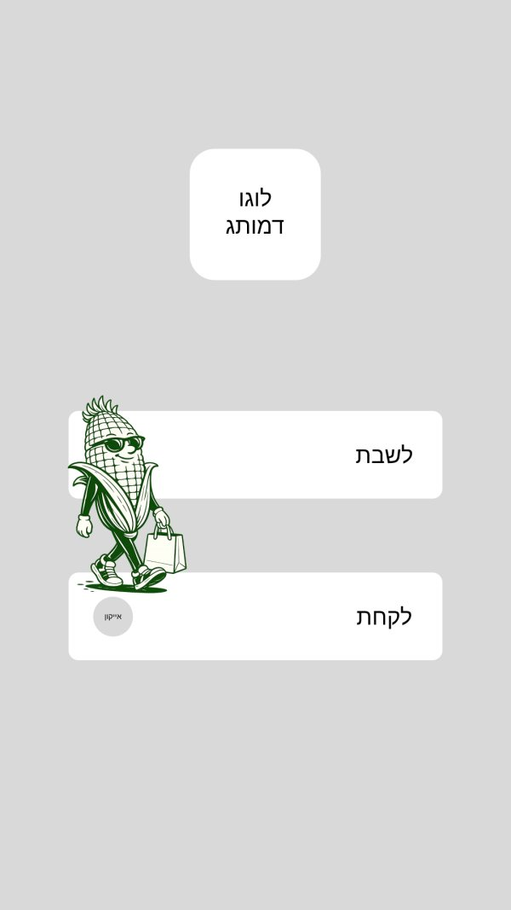
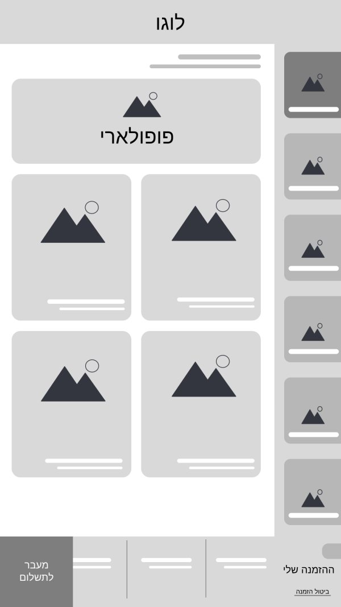
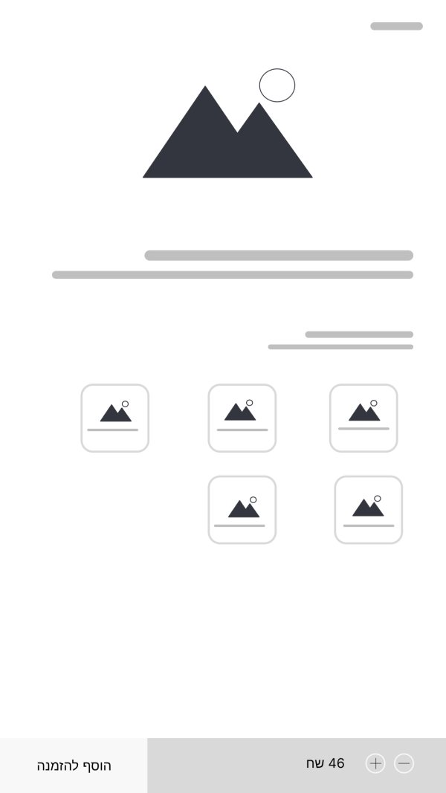
From welcome to dish, in five steps
The final screens keep the wireframe structure and add the brand on top. The flow reads in five steps, from a guest walking up to the kiosk to a dish in the order.
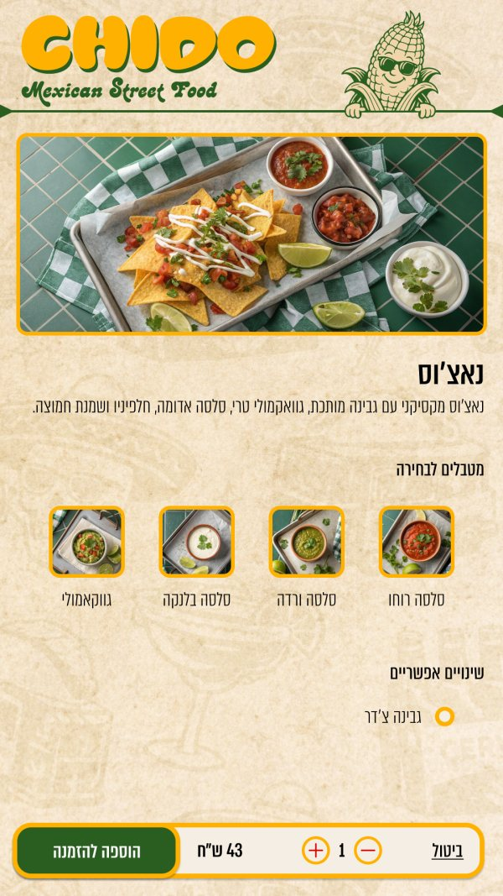
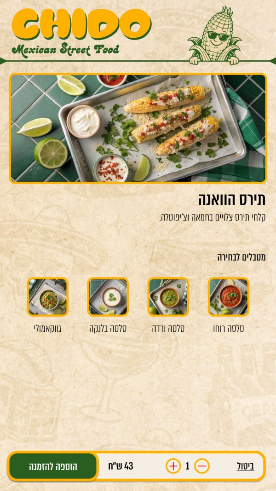
Order with your eyes first
Food photography leads
Every item is a large, yellow outlined photo with its name and price underneath, so a guest orders with their eyes first and reads second.
Big and unmistakable
Dine in and take away are two full width green buttons with the mascot at a table on one and walking off with a bag on the other.
Right to left from the ground up
The layout, category rail, prices and order bar are mirrored for Hebrew, while the English tagline stays in the brand's display type.
Pictures, not option lists
Sauces are picked from small photo tiles, and extras like cheddar are a single tap, so customizing a dish never becomes a form.
A switch within reach
A small globe sits in the corner of the entry screens for guests who prefer another language.
Always visible
The order bar and the dish page bar keep price, quantity and the next action in the same place on every screen.
A street food counter, not a template
The identity is retro and playful: a chunky, rounded wordmark in sunshine yellow with a deep green shadow, a script tagline, and a corn mascot in sunglasses who appears in several poses across the interface. Warm paper texture sits behind the menu, and the food photography leans on green tile and gingham cloth.
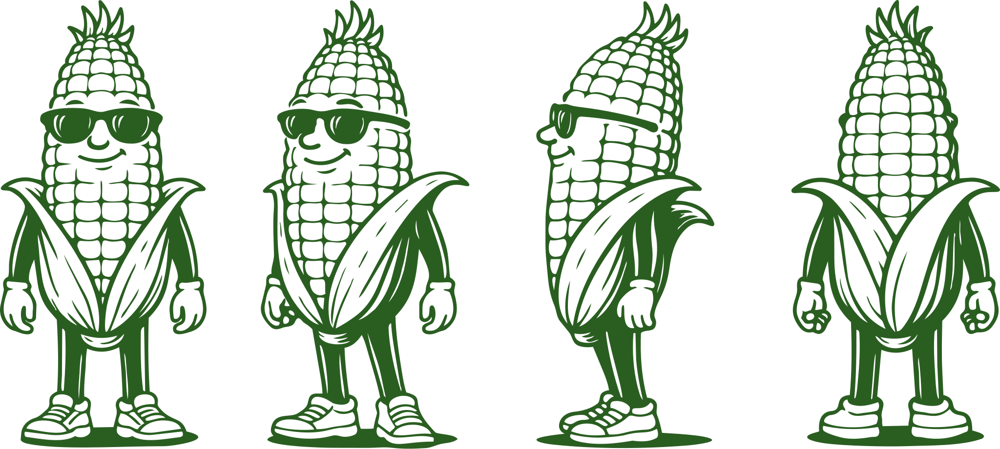
The poster
The identity also works in a single ink. This poster strips everything back to one green on warm paper: the wordmark, the script tagline arched over a walking mascot with a drink, halftone bands top and bottom, and small print lines like "Made fresh daily" and "Good vibes only" to set the tone.
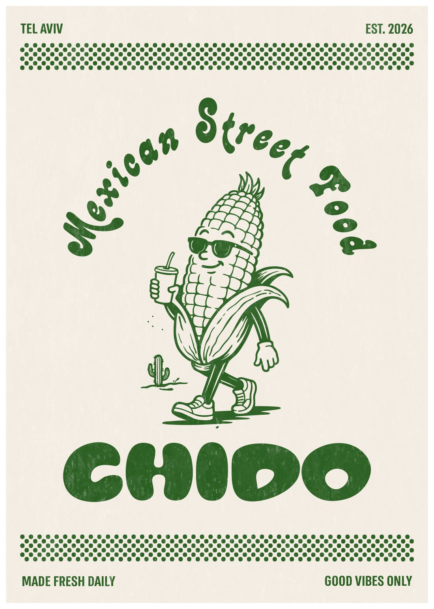
At real size
To check how the flow feels at real size, I placed the screens on freestanding ordering kiosks: a tall portrait display, with the card reader and receipt printer underneath. Side by side, the welcome, menu, and dish screens read as one continuous flow.
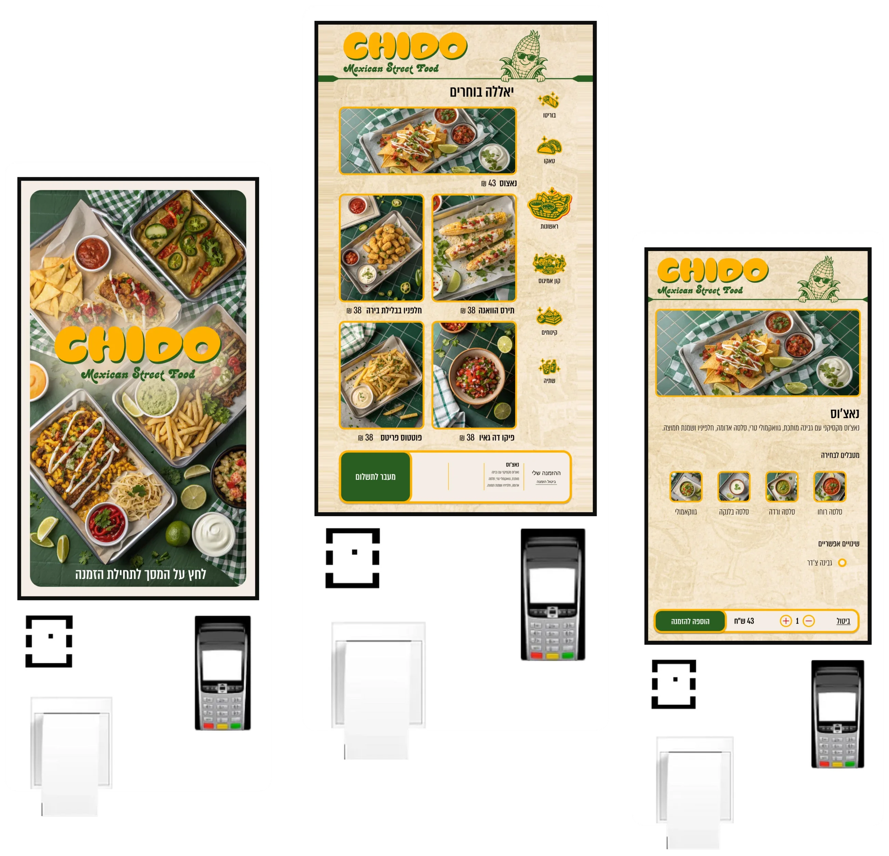
A first impression, not a form
A kiosk is a first impression
The same order can feel like a chore or like the start of a meal, and the brand, the photography, and the mascot are what set the tone.
Design for the thumb and the queue
Big targets, one decision at a time, and a total that never disappears keep the flow fast for someone standing up with people waiting behind them.
Wireframes earn their keep
Settling the structure in grayscale first let the brand and the photography go on top without reopening the layout.
Thanks for reading!
More projects
Keep exploring the work.